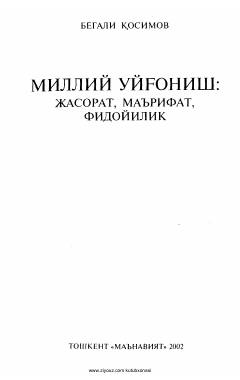

MUXX asr boshidagi Turkiston jadidchilik harakati va uning namoyandalari haqidagi ilmiy-tarixiy tadqiqot.
Ushbu kitob XX asr boshidagi Turkiston tarixining eng muhim hodisalaridan biri bo'lgan jadidchilik harakati va uning namoyandalari faoliyatiga bag'ishlangan. Muallif o'nlab yillik tadqiqotlari davomida jadidchilikning shakllanishi, tarixi va uning yetakchi namoyandalarining merosini atroflicha yoritib bergan. Asar milliy uyg'onish davri arboblarining jasorati, maʼrifatparvarligi va fidoyiligini bugungi kun nuqtayi nazaridan baholaydi.